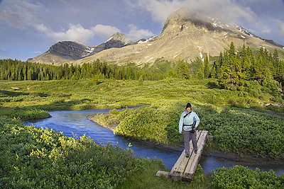
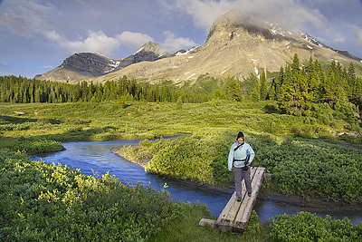

For Jessica Albright
Canada's first national park. It is located in the Rocky Mountains, surrounded beautifully by ten different peaks. It is full of gorgeous lakes many of which are connected by flowing streams that make it an excellent area for hiking, paddling and camping. You can book guided tours or follow your own path hiking and portaging through the wilderness of 6,641 square kilometres (2,564 sq mi)[2] of mountainous terrain, with many glaciers and ice fields, dense coniferous forest, and alpine landscapes. Not only does it offer a stunning spot for these activities but it is also widely known for its wondering hot springs.
One of the biggest things on my bucket list is to hike up a mountain. After I had decided that I was commiting to this adventure, I figured first things first, I need a plan of action.
In order to set up a exercise program to accomplish this I needed to make my goals more specific and to do that I needed to choose a mountain. In the end I decided on visiting one of Canada's most popular destinations, Banff National Park, BC.
From there I chose two different trails.
Bow Glacier Falls
Length: 4.6 km (one way)
Hiking time: 3 hour round trip
Elevation gain: 155 m
Trailhead: Highway 93 North, 36 km north of the Lake Louise junction, 400 m down the Num-ti-jah Lodge access road.
Description: At the base of Bow Glacier Falls, amid the spray and roar, you can witness the birth of a river. The Bow River, part of western Canada’s largest watershed, begins as meltwater tumbling down from the Wapta Icefield.


Sunset Pass
Length: 8.2 km (one way)
Hiking time: 6 to 7 hour round trip
Elevation gain: 725 m
Trailhead: Highway 93 North, 16.5 km north of the Saskatchewan Crossing.
Description: Climb steadily through a thick forest to reach an expansive meadow atop Sunset Pass. Look west for a panorama of the largest peaks in the parks, or east into the remote White Goat Wilderness Area.
 

This is going to be my second year on the Brock Badgers Dragon Boat team . It was started only three years ago so it's still rather fresh, but since Brock is located so closely to Wellend, we have the luck to be able to practice at the Welland International Flatwater Centre . Which is known for its deep still waters and is really a beautiful area to practice, especially morning practices with the sun rise over the water.
Our coach as been involved in the sport for years and is very accomplished in his own right. He was been nice enough to make up Dragon boat specific workouts for us when we are not meeting as a team. I am so grateful for the expereince and will cherish this introduction to the sport as I grow into it. However, even with dedicated coaching and an amazing facility, I need to become stronger as an individual so that we can become strronger as a team. One of the ways I do this is by working out either by going for a run outside, by visiting th egym or by doing some relaxing yoga. Dragon boat is all about using your core to propel the boat through the water. A key concept to the sport is its team value and the need for synchronized paddling.
Here I will make a quick reference to different exercises I can put together to make a workout. A lot of this is probably going to be cardio, oh joy!
Here are some basic areas to hit. Try to do different activities on differnet days. So wednesday between class I will do cardio and then Friday I will do Yoga and then a day at the actual gym, with a day of practica.
I have been steering towards working with the elderly for a while, especially after i took that gerontology class offered at brock. It was eye opening about a group within the population that can oftend be ignored a little. This is partially due to not wanting to face the inevitable realties. However, if I have learned anything it's that aging doesn't have to be a scary thought.
Especially if you try and take certain precautions now.
A lot of women can suffer from low bone density or osteoporosis as they age. A coulke easy ways to avoid this is increasing your calcium intake and working with resistance training to strengthen the bone directly.
Its important to remember health is more than just exercise and the habits you form in young adulthood will stick with you. Eating right and keeping your mind challenged are also important.
Created by Jessica Albright